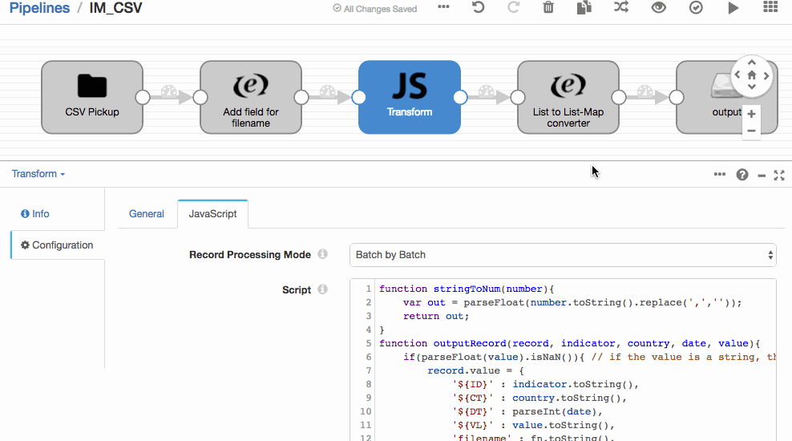
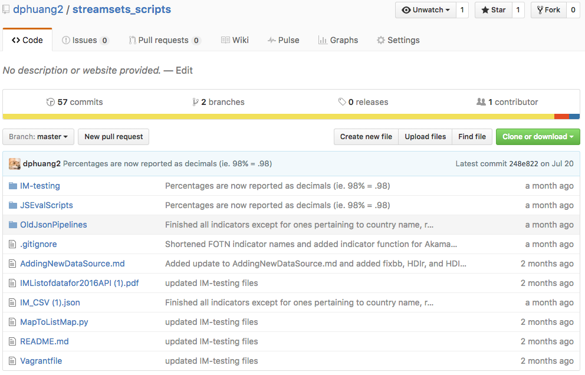
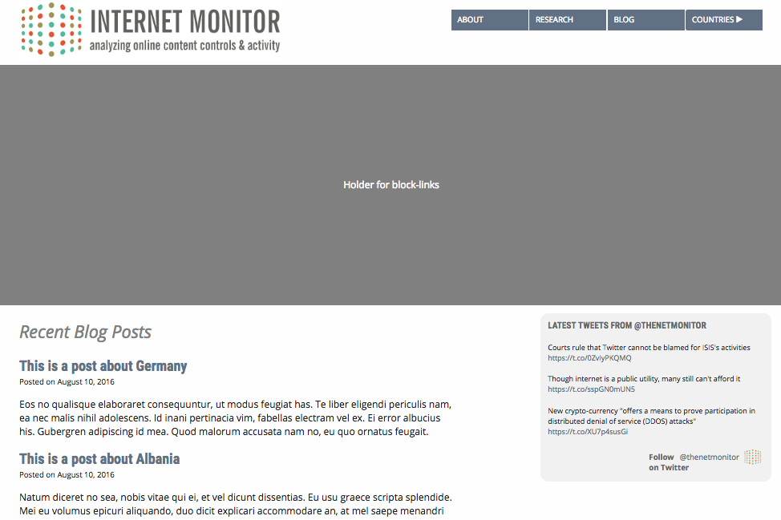
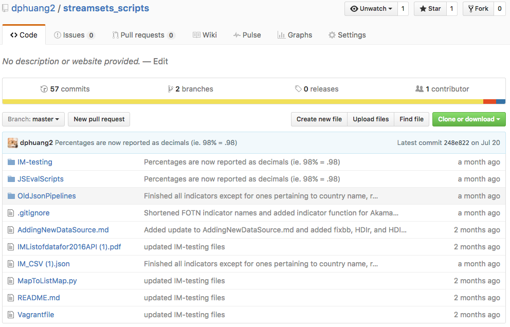
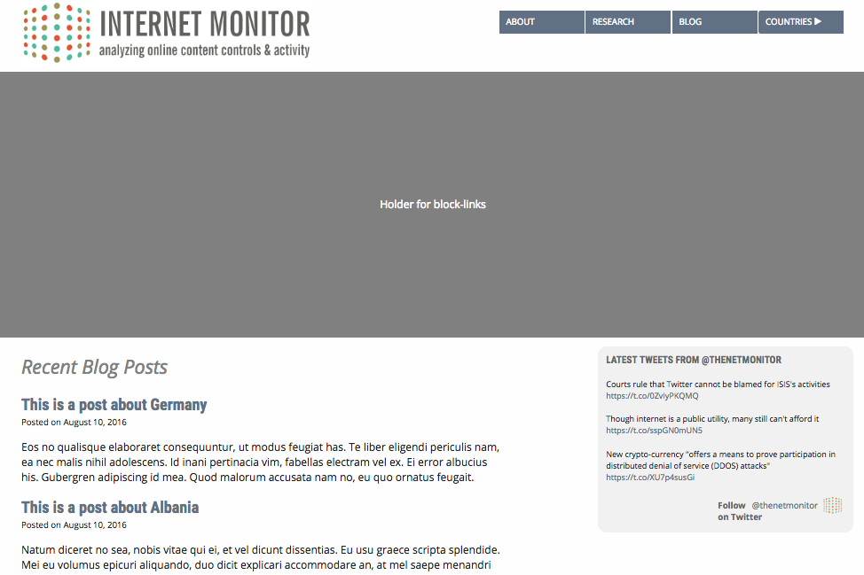
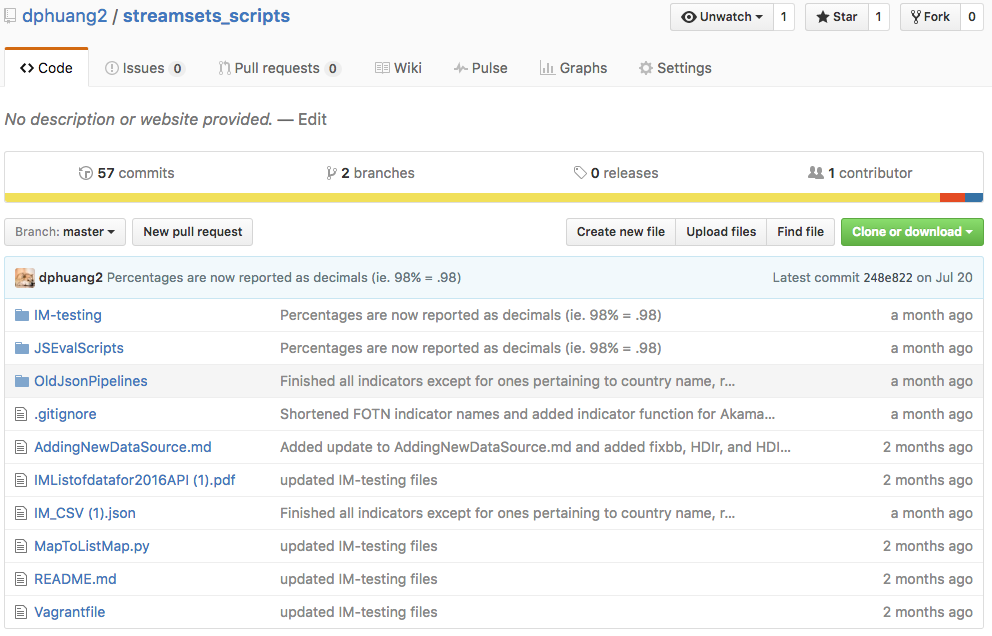
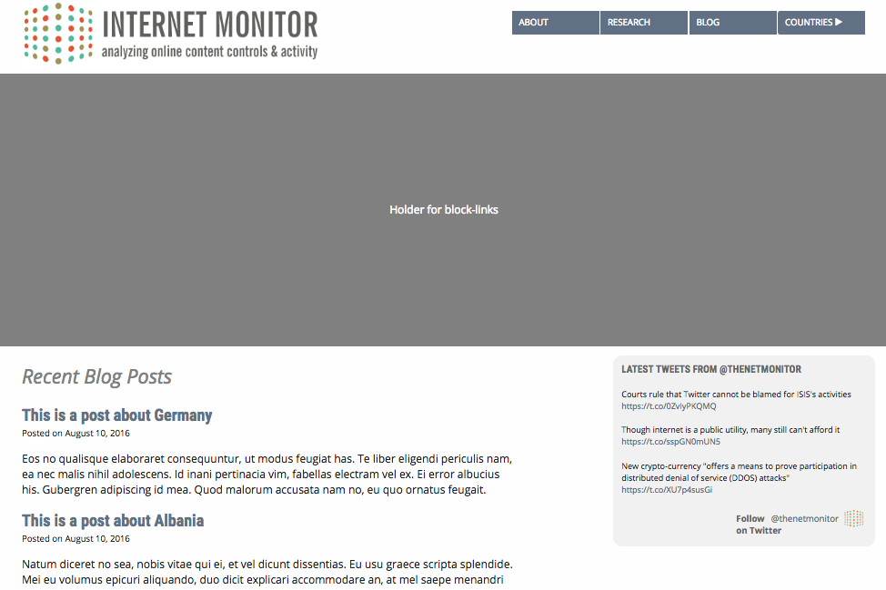

- Research a new platform for the integration of disparate data sources into a single Internet Monitor Platform offering.
- Make data available through the Internet Monitor website via a newly defined Platform Data API.
- Create a scalable, modular, and reliable system to run the ETL process on demand
- Automate an otherwise manual and time consuming process of integrating data into the Internet Monitor system
- Eliminate the tedious and error prone human element of transforming data
Points considered:
- Ease of use—how easy is it to setup and how user-friendly is the interface
- Functionality of platform—how well does it fit our needs
- How is data retrieved and the format/method of output
Platforms considered:
Platform Chosen:
Reason: Streamsets beat out the other platforms in flexibility by allowing the use of JavaScript to script the transformation process rather than trying to alter and customize pre-built "Evaluators" to transform the data into the desired form.
Structure
After deciding a platform, the next step was to develop a system that would help achieve our goal of running a scalable, modular, and reliable ETL process on demand. The system boiled down to one script.js file that runs all the logic and transformation of each file while Streamsets handled the input and output. AddingNewDataSource.md explains the structure of all the code that performs the transformation in detail.Quick Summary
There are three blocks of the code that are important to understand
- "outputRecord" function | Line #5 This function contains the syntax for outputting a record (one line in the csv file). It is executed at the end of each indicator function.
- All the indicator functions | Starts at line #25 Every indicator function contains the process to transform the origin file to the correct format. Though each function is unique, every function contains a similar structure outlined in AddingNewDataSource.md.
- Logic for which function to execute | Starts at line #536 This block contains the basic logic for which indicator function to execute using hard-coded Regex or filenames and a switch statement.
Important Files/Folders - Repo
- /JSEvalScripts/script.js
- This file contains all the code for transforming each .csv file into the desired indicator/country/date/value format.
- /IM-testing
- Folder that contains all the origin files (input), and destination files (output)
- AddingNewDataSource.md
- This markdown files contains the instructions for adding another data source to the pipeline and an explanation for the structure of script.js.
- *.json files
- Streamsets allows users to import a pipeline through use of .json files. This folder contains all the past versions of .json files while the most recent pipeline is in the source directory
Wrapping up the summer
After I finished scripting the transformation of all the data sources, I worked on redesigning the front-page of the Internet Monitor. Commits

 





Skills Learned
- Streamsets and other data pipelining platforms During the research part of my assignment, I spent a lot of time comparing and researching the different platforms and what they had to offer. I also spent a lot of time playing with Streamsets and learning the ins and outs of it.
- JavaScript Streamset's JavaScript evaluator was the most significant part of the platform.
- RegExr Some of the data sources required the use of RegExr to evaluate multiple files and write the logic for which function indicator to execute.
- Ruby on Rails Although I spent most of my time working with Streamsets, I also spent a lot of time learning Ruby on Rails in preparation in working on the website itself. I learned important concepts such as MVC, data hashing, encryption, cookies, and test-driven development.
Mentors
Thank you Ryan and Rebekah for a wonderful summer of coding and learning!